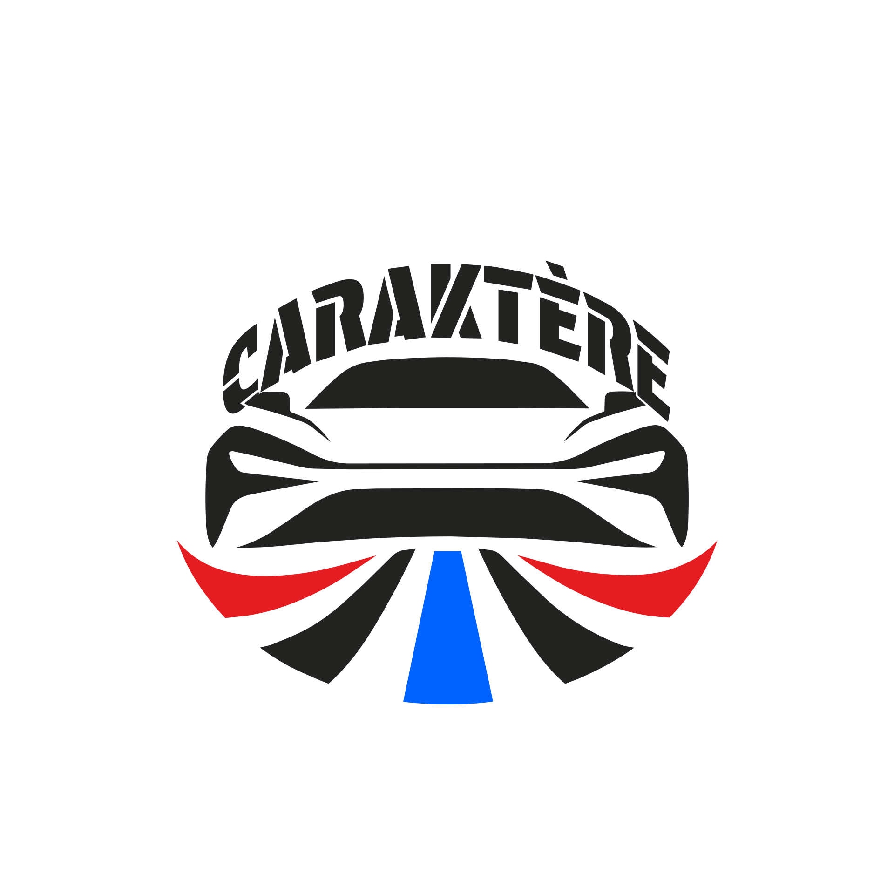
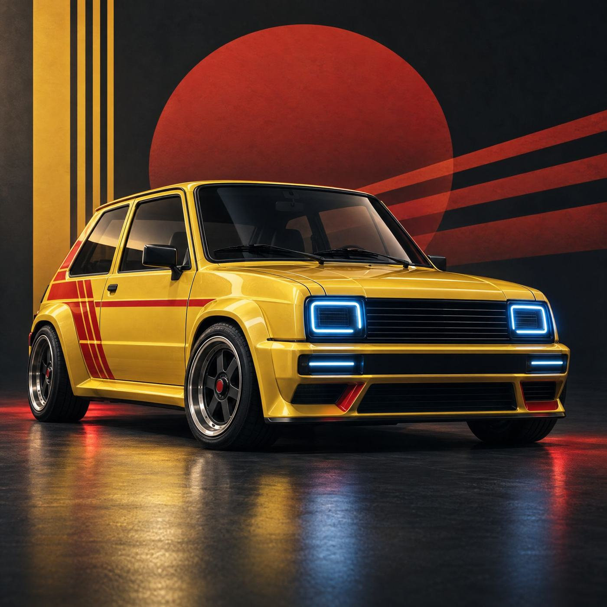
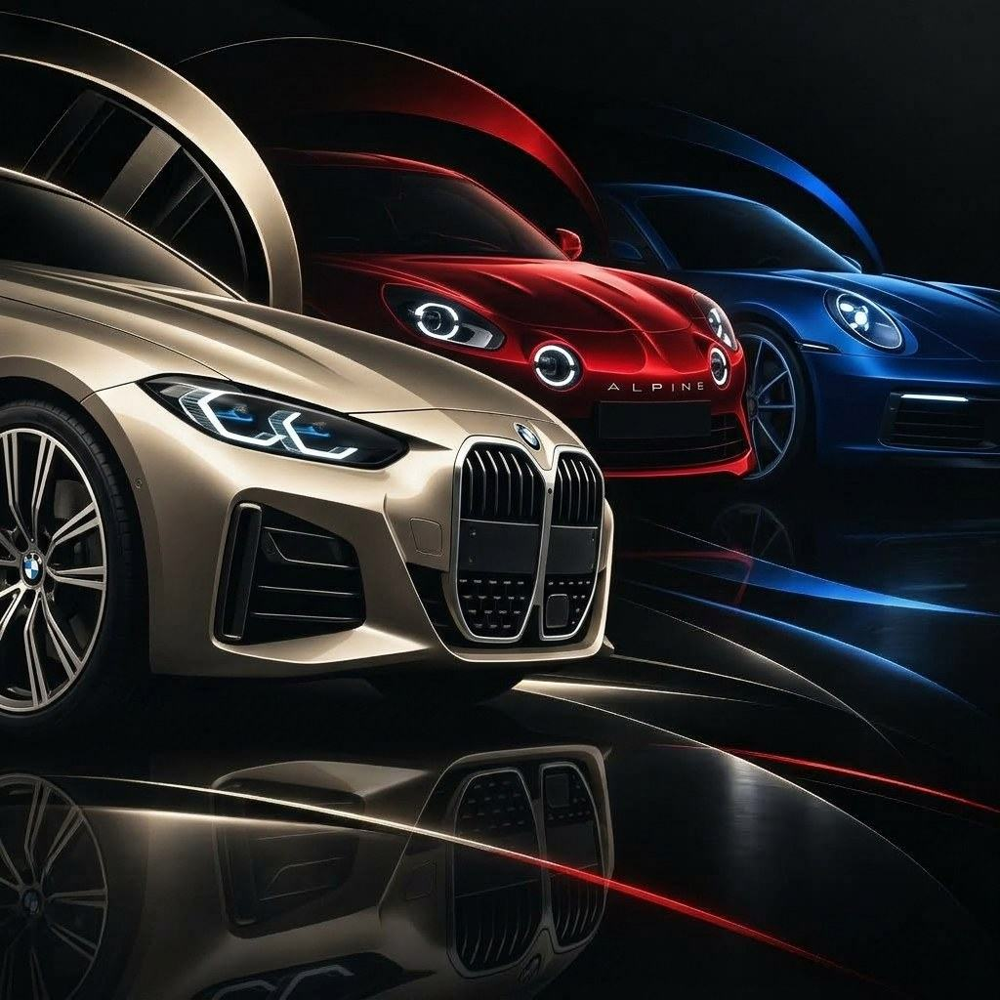

15 – 18 min
Le grand sujet
00:00
L'analyse principale : design, identité, communication, histoire ou culture automobile.



Ce que les voitures racontent
Le podcast qui décrypte l'automobile au-delà de ses performances et de sa fiche technique. Pas pour savoir quelle est cette voiture, mais pour comprendre pourquoi elle devient reconnaissable, désirable, iconique.
On reconnaît une voiture à sa signature lumineuse avant de lire son badge. Cinq paires de phares, un seul coup d'œil.
L'analyse principale : design, identité, communication, histoire ou culture automobile.
Ce que la F1 raconte en branding, storytelling et design.
Même silhouette, autre échelle. Choisis un modèle, puis glisse pour passer de la voiture réelle à sa version 1/5 radiocommandée.
Une machine, des choix, seize assemblages. Explore le modèle en 3D, démonte-le et recompose-le sans perdre le fil de sa silhouette.
À propos de cette expérience 3D. APEX est un projet indépendant créé par son auteur sur GitHub. Je ne l’ai pas développé : je l’intègre ici comme démonstration interactive pour explorer la conception d’une monoplace de Formule 1 conceptuelle et la manière dont ses éléments s’assemblent. Le modèle ne représente pas une voiture de route classique. Pour faire pivoter la monoplace, clique et fais glisser ; pour zoomer, utilise la molette ou le pincement tactile ; pour séparer ou réunir les éléments, déplace le curseur d’assemblage ; clique sur une pièce si tu veux l’examiner et utilise les commandes de vue pour changer d’angle. L’interface d’origine étant chargée depuis le projet externe, ses boutons et libellés restent en anglais. Repères utiles : « Explode » signifie démonter / écarter les pièces, « Reset » réinitialiser la vue, « Auto Rotate » faire tourner le modèle automatiquement, et « Top / Side / Perspective » choisir une vue du dessus, de côté ou en perspective. Ces traductions sont un aide-mémoire ; elles ne remplacent pas les libellés dans l’iframe.
Design rétro-futuriste, renaissance électrique, héritage sportif. Minute F1 en écho.
Écouter l’épisode 01 sur Spotify ↗
Silhouettes, feux, calandres : Porsche, BMW, Alpine, Cupra et leurs codes visuels.
Écouter l’épisode 02 sur Spotify ↗Retrouve ici le dossier complet de CARAKTÈRE : le concept, le public, le positionnement, le format des épisodes et l’univers visuel.
Le PDF est consultable directement sur cette page. Tu peux aussi l’ouvrir dans un nouvel onglet ou le télécharger.
Je m'appelle Pauline. Je suis étudiante en communication, et j'ai toujours aimé les voitures : Cars était déjà l'un de mes dessins animés préférés. Je suis la F1 depuis quelques années, j'adore le karting, et j'ai déjà conduit une Aston Martin Vantage sur circuit.
Avec CARAKTÈRE, je cherche à comprendre pourquoi une voiture nous marque. Parce que, soyons honnêtes, elles ont parfois plus de personnalité que leurs propriétaires.